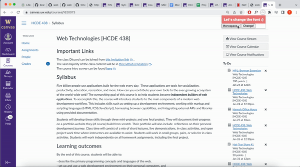
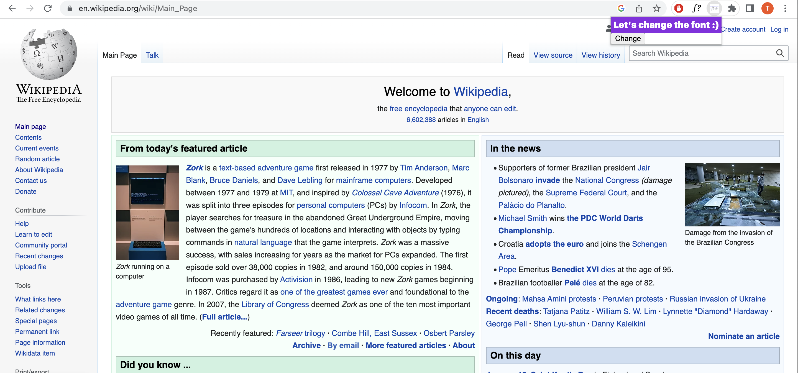

My web extension is a font changer. Once the icon is clicked in the extension it shows the user a dropdown which can be clicked and 4 total fonts are available to choose from. Once one is chosen and the “change” button is clicked, it changes all the font on the webpage to the chosen font that the user chose.
Here is a gif of my extension changing the font of the HCDE 438 Canvas site.
To run this extension, you need to go my github repo which is listed below and clone my repo. Once that is done, you need to open google extensions and add in the folder titled "m1". After this, you can open your extensions from the browser and select mine and then it will prompt you with a dropdown of different fonts to change to and once you select one you want to change it to then you press the change button.
Github RepoMy step by step process consisted of:
To go more in depth into this process, I started off by just trying to change the font of the page to one specific kind of font. This required me to play around with the popup html and js as well as the content scripts js. Once I got this to work, I transitioned into making it a little more complex by adding a dropdown to the popup to allow the users to choose various font choices. When I finished this part, I moved onto connecting the popup javascript with the content scripts javascript so that the popup choice could be communicated to the content scripts and that would change the font of the text on that page. After I got all the functionality to work, I went in and changed the design of the popup to fit a little more into what I wanted it to look like.
Here is an image of an unfinished state of my website.
One of the problems I encountered with this assignment was in trying to transfer the choice from the dropdown that the user chose for the font to the content-scripts javascript. I had to try and figure out how to grab the choice made and move it from the popup javascript over to the contents one and then reflect that to the site. I was able to resolve this by looking at the example background changer extension since my extension had a similar process with the user choosing an option and having that be reflected on the webpage. Besides the example, I was also able to utilize a lot of insightful discussion boards and resources on Google. I learned about sending a message over to the content scripts javascript as well as how to take something from a popup or javascript file and get it across and use it in another one.
Another problem I encountered was with the chrome.runtime and learning what was necessary to have in popup.js and what was not. I was able to resolve this through going to office hours and talking with Raina who helped me go through line by line and see what I needed in my code and also what wasn't necessary. This really helped me better understand what was happening in popup.js as well as get my popup.js to work.
Additional ideas and features I might like to add to my site in the future: